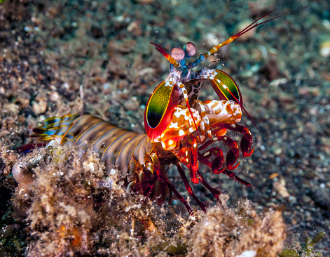
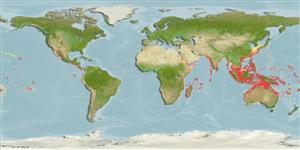
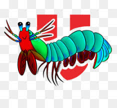

Fatos sobre o Stomatopoda
Informações Gerais
Nome Cietifíco
Odontodactylus scyllarus
Reino
Animalia
Filo
Arthropoda
SubFilo
Crustacea
Classe
Malacostraca
SubClasse
Hoplocarida
Ordem
Stomatopoda
Comportamento Social
São animais que apresentam comportamentos sociais muito variados, desde ameaças visuais contra predadores até comportamentos de côrte.
Localização Geográfica
Estomatópodes podem ser encontrados em quase todo o litoral brasileiro, mas não são animais fáceis de se observar pelos seus hábitos mais furtivos.
Curiosidade Fatal
Capazes de desferir um dos mais rápidos e violentos golpes, um soco que pode apresentar a velocidade de um calibre .22 (equivalente a 720km/h) e um impacto de 60 kg/cm².
Referências Bibliográficas
- Stomatopoda; Disponível em: https://pt.wikipedia.org/wiki/Stomatopoda#Fam%C3%ADlias
- Odontodactylus scyllarus; Disponível em: https://www.sealifebase.ca/summary/Odontodactylus-scyllarus.html
- Odontodactylus scyllarus, Tamarutaca ; Disponível em: https://www.istockphoto.com/br/foto/odontodactylus-scyllarus-tamarutaca-gm1069818044-286193642